| title: “Indexes for simultaneous selection” |
| author: “Tiago Olivoto” |
| date: “2024-12-13” |
| output: rmarkdown::html_vignette |
| link-citations: true |
| bibliography: metanref.bib |
| vignette: > |
| % |
| % |
| % |
Getting started
In this section we will use the data examples data_ge
and data_ge2 provided in the metan
package. For more information, please, see ?data_ge and
?data_ge2. Other data sets can be used provided that the
following columns are in the dataset: environment, genotype,
block/replicate and response variable(s). See the section Rendering engine to know how HTML tables were
generated.
Multi-trait stability index
The function mtsi() is used to compute the multi-trait
stability index (MTSI) proposed by @Olivoto2019a. The first argument is a model of
the class waasb or waas. It is possible to
compute the MTSI for both WAASB -stability only- and
WAASBY -simultaneous selection for mean performance and
stability.
Based on stability only
In the following example, the selection of stable genotypes will
consider five traits, namely, KW, NKE, PH, EH, and TKW. Note that the
output of the function waasb() is passed to the function
mtsi() by the forward-pipe operator %>%.
Finally, the MTSI index is plotted using the function
plot().
library(metan)
MTSI_index <-
data_ge2 %>%
waasb(ENV, GEN, REP,
resp = c(KW, NKE, PH, EH, TKW)) %>%
mtsi(verbose = FALSE, index = "waasb")
# Evaluating trait KW |========= | 20% 00:00:00 Evaluating trait NKE |================= | 40% 00:00:01 Evaluating trait PH |========================== | 60% 00:00:01 Evaluating trait EH |=================================== | 80% 00:00:02 Evaluating trait TKW |===========================================| 100% 00:00:02
# Method: REML/BLUP
# Random effects: GEN, GEN:ENV
# Fixed effects: ENV, REP(ENV)
# Denominador DF: Satterthwaite's method
# ---------------------------------------------------------------------------
# P-values for Likelihood Ratio Test of the analyzed traits
# ---------------------------------------------------------------------------
# model KW NKE PH EH TKW
# COMPLETE NA NA NA NA NA
# GEN 6.21e-01 1.00000 9.39e-01 1.00e+00 1.00e+00
# GEN:ENV 4.92e-07 0.00101 1.09e-13 8.12e-12 4.21e-10
# ---------------------------------------------------------------------------
# All variables with significant (p < 0.05) genotype-vs-environment interactionBased on mean performance and stability
The following code considers that higher values for KW, NKE, TKW are
better, and lower values for PH and EH are better. By using
wresp = 65, the simultaneous selection for mean performance
and stability will prioritize the mean performance (mean of the
variables) rather than their stability across environments.
MTSI_index2 <-
data_ge2 %>%
waasb(ENV, GEN, REP,
resp = c(KW, NKE, PH, EH, TKW),
mresp = c("h, h, l, l, h"),
wresp = 65) %>% # Default is 50
mtsi(SI = 20)
# Warning: Invalid length in 'wresp'. Setting wresp = 65 to all the 5 variables.
# Evaluating trait KW |========= | 20% 00:00:00 Evaluating trait NKE |================= | 40% 00:00:01 Evaluating trait PH |========================== | 60% 00:00:01 Evaluating trait EH |=================================== | 80% 00:00:02 Evaluating trait TKW |===========================================| 100% 00:00:02
# Method: REML/BLUP
# Random effects: GEN, GEN:ENV
# Fixed effects: ENV, REP(ENV)
# Denominador DF: Satterthwaite's method
# ---------------------------------------------------------------------------
# P-values for Likelihood Ratio Test of the analyzed traits
# ---------------------------------------------------------------------------
# model KW NKE PH EH TKW
# COMPLETE NA NA NA NA NA
# GEN 6.21e-01 1.00000 9.39e-01 1.00e+00 1.00e+00
# GEN:ENV 4.92e-07 0.00101 1.09e-13 8.12e-12 4.21e-10
# ---------------------------------------------------------------------------
# All variables with significant (p < 0.05) genotype-vs-environment interaction
#
# -------------------------------------------------------------------------------
# Principal Component Analysis
# -------------------------------------------------------------------------------
# # A tibble: 5 × 4
# PC Eigenvalues `Variance (%)` `Cum. variance (%)`
# <chr> <dbl> <dbl> <dbl>
# 1 PC1 3.38 67.6 67.6
# 2 PC2 1.07 21.4 89.1
# 3 PC3 0.438 8.76 97.9
# 4 PC4 0.0781 1.56 99.4
# 5 PC5 0.0292 0.584 100
# -------------------------------------------------------------------------------
# Factor Analysis - factorial loadings after rotation-
# -------------------------------------------------------------------------------
# # A tibble: 5 × 5
# VAR FA1 FA2 Communality Uniquenesses
# <chr> <dbl> <dbl> <dbl> <dbl>
# 1 KW -0.500 -0.838 0.952 0.0484
# 2 NKE -0.000687 -0.924 0.854 0.146
# 3 PH 0.940 0.194 0.922 0.0783
# 4 EH 0.964 0.163 0.957 0.0435
# 5 TKW -0.583 -0.656 0.770 0.230
# -------------------------------------------------------------------------------
# Comunalit Mean: 0.8908918
# -------------------------------------------------------------------------------
# Selection differential for the waasby index
# -------------------------------------------------------------------------------
# # A tibble: 5 × 6
# VAR Factor Xo Xs SD SDperc
# <chr> <chr> <dbl> <dbl> <dbl> <dbl>
# 1 PH FA 1 44.4 48.6 4.17 9.39
# 2 EH FA 1 49.2 52.9 3.67 7.45
# 3 KW FA 2 53.3 74.3 21.1 39.6
# 4 NKE FA 2 45.0 72.3 27.4 60.9
# 5 TKW FA 2 53.8 63.5 9.70 18.0
# -------------------------------------------------------------------------------
# Selection differential for the mean of the variables
# -------------------------------------------------------------------------------
# # A tibble: 5 × 11
# VAR Factor Xo Xs SD SDperc h2 SG SGperc sense
# <chr> <chr> <dbl> <dbl> <dbl> <dbl> <dbl> <dbl> <dbl> <chr>
# 1 PH FA 1 2.48 2.51 0.0279 1.12 3.51e- 2 9.79e- 4 3.94e- 2 decrease
# 2 EH FA 1 1.34 1.35 0.0108 0.807 7.95e- 9 8.62e-11 6.42e- 9 decrease
# 3 KW FA 2 173. 178. 5.44 3.15 2.04e- 1 1.11e+ 0 6.43e- 1 increase
# 4 NKE FA 2 512. 526. 14.3 2.79 0 0 0 increase
# 5 TKW FA 2 339. 340. 1.31 0.388 2.32e-15 3.05e-15 9.00e-16 increase
# # ℹ 1 more variable: goal <dbl>
# ------------------------------------------------------------------------------
# Selected genotypes
# -------------------------------------------------------------------------------
# H5 H11 H4
# -------------------------------------------------------------------------------
plot(MTSI_index2)
MGIDI index
The MGIDI index can be seen as the MTSI index with a weigth of 100
for mean performance. This index is computed with the function
mgidi(). Here, we will use the example data
data_g(). By default, all traits are assumed to be
increased. To change this default, use the argument
ideotype. For example, if for three traits, the first one
is assumed to be decreased and the last two are assumed to be increased,
use ideotype = c("l, h, h").
mod <- gamem(data_g,
gen = GEN,
rep = REP,
resp = everything())
# Evaluating trait PH |=== | 7% 00:00:00 Evaluating trait EH |====== | 13% 00:00:00 Evaluating trait EP |========= | 20% 00:00:00 Evaluating trait EL |============ | 27% 00:00:00 Evaluating trait ED |=============== | 33% 00:00:00 Evaluating trait CL |================== | 40% 00:00:00 Evaluating trait CD |===================== | 47% 00:00:00 Evaluating trait CW |======================= | 53% 00:00:00 Evaluating trait KW |========================== | 60% 00:00:00 Evaluating trait NR |============================= | 67% 00:00:00 Evaluating trait NKR |================================ | 73% 00:00:00 Evaluating trait CDED |================================== | 80% 00:00:01 Evaluating trait PERK |==================================== | 87% 00:00:01 Evaluating trait TKW |======================================== | 93% 00:00:01 Evaluating trait NKE |===========================================| 100% 00:00:01
# Method: REML/BLUP
# Random effects: GEN
# Fixed effects: REP
# Denominador DF: Satterthwaite's method
# ---------------------------------------------------------------------------
# P-values for Likelihood Ratio Test of the analyzed traits
# ---------------------------------------------------------------------------
# model PH EH EP EL ED CL CD CW KW
# Complete NA NA NA NA NA NA NA NA NA
# Genotype 0.051 0.454 0.705 0.786 2.73e-05 2.25e-06 0.118 1.24e-05 0.0253
# NR NKR CDED PERK TKW NKE
# NA NA NA NA NA NA
# 0.0056 0.216 9.14e-06 4.65e-07 0.00955 0.00952
# ---------------------------------------------------------------------------
# Variables with nonsignificant Genotype effect
# PH EH EP EL CD NKR
# ---------------------------------------------------------------------------
mgidi_index <- mgidi(mod,
SI = 20) # Selection intensity
#
# -------------------------------------------------------------------------------
# Principal Component Analysis
# -------------------------------------------------------------------------------
# # A tibble: 15 × 4
# PC Eigenvalues `Variance (%)` `Cum. variance (%)`
# <chr> <dbl> <dbl> <dbl>
# 1 PC1 5.35 35.7 35.7
# 2 PC2 4.76 31.8 67.4
# 3 PC3 3.06 20.4 87.8
# 4 PC4 0.87 5.81 93.6
# 5 PC5 0.39 2.63 96.2
# 6 PC6 0.3 2.01 98.2
# 7 PC7 0.1 0.66 98.9
# 8 PC8 0.08 0.52 99.4
# 9 PC9 0.05 0.31 99.7
# 10 PC10 0.04 0.23 100.
# 11 PC11 0 0.02 100
# 12 PC12 0 0 100
# 13 PC13 0 0 100
# 14 PC14 0 0 100
# 15 PC15 0 0 100
# -------------------------------------------------------------------------------
# Factor Analysis - factorial loadings after rotation-
# -------------------------------------------------------------------------------
# # A tibble: 15 × 6
# VAR FA1 FA2 FA3 Communality Uniquenesses
# <chr> <dbl> <dbl> <dbl> <dbl> <dbl>
# 1 PH -0.05 -0.9 0.2 0.85 0.15
# 2 EH 0.03 -0.77 0.57 0.91 0.09
# 3 EP 0.14 -0.31 0.85 0.83 0.17
# 4 EL 0.08 -0.13 -0.88 0.8 0.2
# 5 ED 0.63 -0.7 -0.02 0.9 0.1
# 6 CL 0.97 -0.02 -0.04 0.94 0.06
# 7 CD 0.17 0.04 -0.95 0.94 0.06
# 8 CW 0.89 -0.32 -0.14 0.91 0.09
# 9 KW 0.36 -0.87 -0.29 0.98 0.02
# 10 NR 0.03 -0.87 0.12 0.78 0.22
# 11 NKR -0.73 -0.1 -0.47 0.77 0.23
# 12 CDED 0.74 0.62 -0.07 0.94 0.06
# 13 PERK -0.92 -0.12 0 0.86 0.14
# 14 TKW 0.91 -0.09 -0.13 0.85 0.15
# 15 NKE -0.49 -0.79 -0.19 0.9 0.1
# -------------------------------------------------------------------------------
# Comunalit Mean: 0.8780411
# -------------------------------------------------------------------------------
# Selection differential
# -------------------------------------------------------------------------------
# # A tibble: 15 × 11
# VAR Factor Xo Xs SD SDperc h2 SG SGperc sense
# <chr> <chr> <dbl> <dbl> <dbl> <dbl> <dbl> <dbl> <dbl> <chr>
# 1 CL FA1 28.4 29.2 0.709 2.49 0.901 0.638 2.24 increa…
# 2 CW FA1 20.8 23.1 2.34 11.3 0.880 2.06 9.91 increa…
# 3 NKR FA1 30.4 30.7 0.291 0.959 0.452 0.132 0.434 increa…
# 4 CDED FA1 0.595 0.581 -0.0133 -2.24 0.884 -0.0118 -1.98 increa…
# 5 PERK FA1 87.6 87.7 0.0619 0.0706 0.916 0.0567 0.0647 increa…
# 6 TKW FA1 318. 322. 4.25 1.34 0.712 3.03 0.953 increa…
# 7 PH FA2 2.17 2.24 0.0707 3.26 0.610 0.0431 1.99 increa…
# 8 EH FA2 1.08 1.09 0.00870 0.807 0.308 0.00268 0.248 increa…
# 9 ED FA2 47.9 50.1 2.26 4.73 0.869 1.97 4.11 increa…
# 10 KW FA2 147. 161. 13.8 9.37 0.659 9.07 6.18 increa…
# 11 NR FA2 15.8 16.9 1.07 6.81 0.736 0.791 5.01 increa…
# 12 NKE FA2 468. 510. 42.3 9.03 0.713 30.1 6.44 increa…
# 13 EP FA3 0.496 0.494 -0.00210 -0.424 0.171 -0.000359 -0.0723 increa…
# 14 EL FA3 14.7 14.7 0.0619 0.422 0.126 0.00780 0.0532 increa…
# 15 CD FA3 15.8 16.1 0.331 2.10 0.532 0.176 1.12 increa…
# # ℹ 1 more variable: goal <dbl>
# ------------------------------------------------------------------------------
# Selected genotypes
# -------------------------------------------------------------------------------
# H13 H5 H2
# -------------------------------------------------------------------------------
p1 <- plot(mgidi_index, SI = 20)
p2 <- plot(mgidi_index, type = "contribution")
arrange_ggplot(p1, p2)Smith-Hazel index
The Smith-Hazel index ([@Smith1936;
@Hazel1943]) is computed with the function
Smith_Hazel(). Users can compute the index either by
declaring known genetic and phenotypic variance-covariance matrices or
by using as inpute data, a model fitted with the function
gamem(). In this case, the variance-covariance are
extracted internally. The economic weights in the argument
weights are set by default to 1 for all traits.
smith <- Smith_Hazel(mod, SI = 20)FAI-BLUP index
The FAI-BLUP is a multi-trait index based on factor analysis and
ideotype-design recently proposed by @Rocha2018. It is based on factor analysis, when
the factorial scores of each ideotype are designed according to the
desirable and undesirable factors. Then, a spatial probability is
estimated based on genotype-ideotype distance, enabling genotype ranking
[@Rocha2018]. Here we will use the
mixed-model mod as inpute data. By default, the selection
is made to increase the value of all traits. Change this default with
the arguments DI and UI.
fai <- fai_blup(mod, SI = 20)
#
# -----------------------------------------------------------------------------------
# Principal Component Analysis
# -----------------------------------------------------------------------------------
# eigen.values cumulative.var
# PC1 5.35 35.67
# PC2 4.76 67.41
# PC3 3.06 87.80
# PC4 0.87 93.61
# PC5 0.39 96.24
# PC6 0.30 98.25
# PC7 0.10 98.91
# PC8 0.08 99.44
# PC9 0.05 99.74
# PC10 0.04 99.98
# PC11 0.00 100.00
# PC12 0.00 100.00
# PC13 0.00 100.00
# PC14 0.00 100.00
# PC15 0.00 100.00
#
# -----------------------------------------------------------------------------------
# Factor Analysis
# -----------------------------------------------------------------------------------
# FA1 FA2 FA3 comunalits
# PH -0.05 -0.90 0.20 0.85
# EH 0.03 -0.77 0.57 0.91
# EP 0.14 -0.31 0.85 0.83
# EL 0.08 -0.13 -0.88 0.80
# ED 0.63 -0.70 -0.02 0.90
# CL 0.97 -0.02 -0.04 0.94
# CD 0.17 0.04 -0.95 0.94
# CW 0.89 -0.32 -0.14 0.91
# KW 0.36 -0.87 -0.29 0.98
# NR 0.03 -0.87 0.12 0.78
# NKR -0.73 -0.10 -0.47 0.77
# CDED 0.74 0.62 -0.07 0.94
# PERK -0.92 -0.12 0.00 0.86
# TKW 0.91 -0.09 -0.13 0.85
# NKE -0.49 -0.79 -0.19 0.90
#
# -----------------------------------------------------------------------------------
# Comunalit Mean: 0.8780411
# Selection differential
# -----------------------------------------------------------------------------------
# # A tibble: 15 × 9
# VAR Factor Xo Xs SD SDperc h2 SG SGperc
# <chr> <dbl> <dbl> <dbl> <dbl> <dbl> <dbl> <dbl> <dbl>
# 1 CL 1 28.4 29.2 0.709 2.49 0.901 0.638 2.24
# 2 CW 1 20.8 23.1 2.34 11.3 0.880 2.06 9.91
# 3 NKR 1 30.4 30.7 0.291 0.959 0.452 0.132 0.434
# 4 CDED 1 0.595 0.581 -0.0133 -2.24 0.884 -0.0118 -1.98
# 5 PERK 1 87.6 87.7 0.0619 0.0706 0.916 0.0567 0.0647
# 6 TKW 1 318. 322. 4.25 1.34 0.712 3.03 0.953
# 7 PH 2 2.17 2.24 0.0707 3.26 0.610 0.0431 1.99
# 8 EH 2 1.08 1.09 0.00870 0.807 0.308 0.00268 0.248
# 9 ED 2 47.9 50.1 2.26 4.73 0.869 1.97 4.11
# 10 KW 2 147. 161. 13.8 9.37 0.659 9.07 6.18
# 11 NR 2 15.8 16.9 1.07 6.81 0.736 0.791 5.01
# 12 NKE 2 468. 510. 42.3 9.03 0.713 30.1 6.44
# 13 EP 3 0.496 0.494 -0.00210 -0.424 0.171 -0.000359 -0.0723
# 14 EL 3 14.7 14.7 0.0619 0.422 0.126 0.00780 0.0532
# 15 CD 3 15.8 16.1 0.331 2.10 0.532 0.176 1.12
#
# -----------------------------------------------------------------------------------
# Selected genotypes
# H5 H2 H13
# -----------------------------------------------------------------------------------
plot(fai)
Comparing the indexes
The function coincidence_indexes() can be used to
compute the coincidence index described by @Hamblin1986, among the multi-trait indexes
implemented in metan. To do that, just use a
comma-separated list of indexes as inpute data and inform the total
number of genotypes.
coincidence <- coincidence_index(mgidi_index, fai, smith, total = 13)
coincidence
# ---------------------------------------------------------------------------
# Coincidence index and common genotypes
# ---------------------------------------------------------------------------
# # A tibble: 3 × 5
# V1 V2 index common genotypes
# <chr> <chr> <dbl> <int> <chr>
# 1 mgidi_index fai 100 3 H13,H5,H2
# 2 mgidi_index smith 56.71 2 H13,H5
# 3 fai smith 56.71 2 H5,H13We can also produce a Venn plot to show the relationships between the indexes
MGIDI <- gmd(mgidi_index, "sel_gen")
# Class of the model: mgidi
# Variable extracted: sel_gen
FAI <- gmd(fai, "sel_gen")[[1]]
# Class of the model: fai_blup
# Variable extracted: sel_gen
SH <- gmd(smith, "sel_gen")
# Class of the model: sh
# Variable extracted: sel_gen
# Create the plot
venn_plot(MGIDI, FAI, SH, show_elements = TRUE)Rendering engine
This vignette was built with pkgdown. All tables were produced
with the package DT using the
following function.
library(DT) # Used to make the tables
# Function to make HTML tables
print_table <- function(table, rownames = FALSE, digits = 3, ...){
df <- datatable(table, rownames = rownames, extensions = 'Buttons',
options = list(scrollX = TRUE,
dom = '<<t>Bp>',
buttons = c('copy', 'excel', 'pdf', 'print')), ...)
num_cols <- c(as.numeric(which(sapply(table, class) == "numeric")))
if(length(num_cols) > 0){
formatSignif(df, columns = num_cols, digits = digits)
} else{
df
}
}